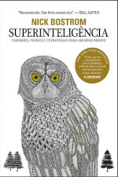

| Livro | Descrição | Nota |
|---|---|---|
 |
Esse livro discute o conjunto das tecnologias que vão definir as próximas décadas do mundo moderno, apresentando os temas de forma não-técnica, com foco nos impactos gerados na sociedade e nos negócios, bem como nos principais personagens por trás destes avanços ao longo da História. |
4.9 |
| No programa, chamado Jogos Vorazes, os adolescentes devem lutar um contra o outro até que reste apenas um sobrevivente. Katniss Everdeen (Jennifer Lawrence de Inverno da Alma e X-Men: Primeira Classe) está entre os participantes do reality, que luta para salvar a própria vida. |
4.5 |  | O cérebro humano possui algumas aptidões ausentes nos cérebros dos demais seres vivos. Nossa posição dominante no planeta se deve a estas particulares habilidades. Outros animais possuem músculos mais robustos ou mandíbulas mais afiadas, mas nós temos cérebros mais sofisticados.Se algum dia os cérebros artificiais superarem a inteligência dos cérebros humanos |
4.4 |